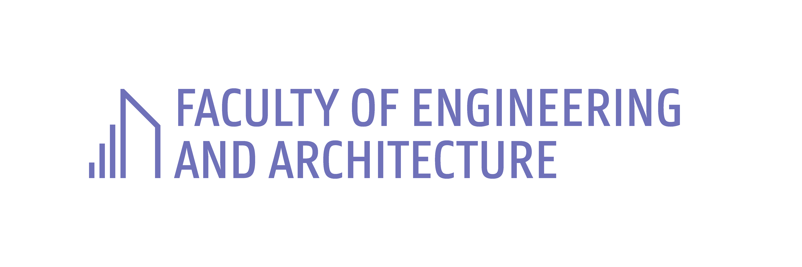
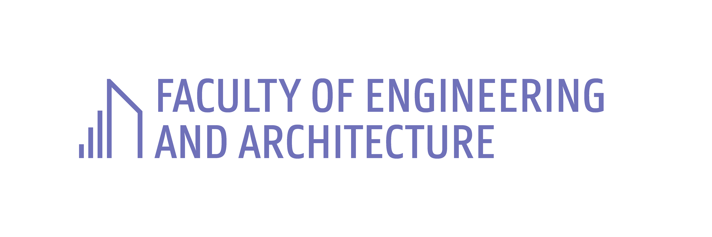

Abstract
One might have noticed that Belgian politicians are currently in “election mode”. At the end of May 2019, the masses will set direction towards an Electoral Office to cast their vote. People need to volunteer to supervise the correct voting procedures, and all votes are manually counted. All of these procedures currently deployed might seem like a task screaming for automation and benefiting from a web-based approach.
However, it is key to thoroughly analyze the viability of such a system first. The task is to investigate what it would take, if at all possible, to implement a web-based electronic voting system in a secure, fair and democratic manner. The goal of this assignment is to focus on the security aspects of online elections, and the arguments against or in favour of such an approach in comparison to the traditional voting process.
This is the report for the project of the course Information Security, given in the Master of Science in Computer Science Engineering by Professor Eric Laermans.
As an introduction to this report, some explanation of the system is given and some assumptions about the environment is sketched.
A Belgian citizen will need to use his identity card and PIN-code to be authenticated on the website, by using an eID viewer. Once logged in, they can cast their vote and finalize it. The server behind the website maintains a list of all cast votes in an anonymous fashion. It will also keep a list of the people that voted. The server will thus know who voted for which party, but this information will not be saved together in the database.
The first assumption that was made, is that the country makes use of eID. Each voter must
have their eID card at their disposal, together with an eID card reader. The reader could
either be property of the user or the voter must have the opportunity to use a voting system
provided by the government. Authentication via itsme could be used to facilitate the
process.
The second assumption is that a voter can only cast their vote once. Just like in the current
voting system, multiple votes from the same user are not allowed.
A third assumption is that no proxy voting can be performed. With this kind of system it is
also a lot easier to vote from the hospital, work or from abroad. This eases up the
authentication process a lot.
To end, the network must be available and power supply must not be interrupted during the
voting period. Ideally the system will be hosted in a Tier-III to Tier-IV data centre [? ].
Anything above that would be overkill. For example, keeping a service up and running during
a flood does not make a lot of sense, since the voters will have other things to worry
about.
In this section, the six required security services for the online election system are discussed and compared to the current voting system. These services are confidentiality, authentication, access control and authorization, data integrity, non-repudiation, and availability and accessibility.
During other elections (such as the American elections) a lot of stipulations where made about possible attacks of the Russians in order to change the outcome of the elections. This system should of course be designed to prevent such things from happening. There are different possibilities to attack this system and different ways to cope with them. They are discussed below in two categories, namely passive versus active attacks.
First of all, the system should prevent eavesdropping. Allowing attackers to intercept votes would compromise anonymity and could lead to intermediate results leaking in order to influence other voters. Preventing this type of attack is done by using Transport Layer Security (TLS) to encrypt cast votes as they are transmitted to the server.
The second type of passive attacks, traffic analysis attacks, can be ignored since everyone knows at what time public elections take place. An attacker that analyses the traffic of a home, city, province, etc. will be limited to observing encrypted messages going back and forth like expected, but they will not be able to do anything with that information.
A first active way to attack the system could be by message insertion/modification. Someone could for example change the transmitted vote of a person from party A to party B. This is also avoided by using TLS. As the traffic is encrypted and the signatures have to match, it is very hard to modify messages between transmission at the client and registering the vote at the server. Because TLS uses SHA2 or higher, the chance of a random generated signature to collide with the signature of a message is very low.
Impersonation/masquerade is a second type of active attacks. In this case, a malicious third party could pretend to be other voters with the goal of voting on their behalf. This attack should be mitigated by the use of the eID readers: a digital signature can be created with the private key of the eID to authenticate the voter. Though there still exist risks, e.g. extortion or threatening of the user by an attacker, deploying this countermeasure will assure that the connecting user is in possession of the eID card of the voter in question and knows their pin. This will rule out the most common and large scale attacks.
Active replay attacks are a third possible issue, as an attacker could replay the vote itself. Without a solid solution for this problem, extra votes could be inserted in the database and voting results could be severely skewed. Fortunately, TLS has this covered as well. It blocks replay using Message Authentication Codes (MACs). On the server side, packages of persons that voted before could also be dropped.
Fourthly, the system could be flooded by a (Distributed) Denial of Service ((D)DoS) attack which could cause the services to crash. First of all, a Tier-III data center can handle quite some traffic. Secondly, the website will be protected with a (D)DoS protection service, which should filter invasive messages of that kind.
A fifth, technical attack could be an attacker hijacking the connection between the user and the website. If an attacker takes over the connection after the user is logged in, they could cast a vote on behalf of that user. Again, TLS solves this threat, because the connection is encrypted. The attacker will not be able to generate the right packets in order to continue the communication.
A more technical attack would be the man-in-the-middle (MITM) attack. In this case, the
attacker makes a fake copy of the website, where a user can log in as well. This fake website
could then pass trough the credentials and set up the connection to the legitimate website.
Once connected, the attackers can cast a vote in their name: the user will think they have
voted but the vote was really cast by the attackers. This is difficult to mitigate, as the average
voter is not well educated to see and avoid those websites. For this reason, TLS 1.3 could be
used in order to try to avoid this in the first place. TLS 1.3 blocks connections if a website is
not legitimate. Another way to avoid users surfing on the attackers’ websites is to educate
the voter through the voting ticket they received. This could warn them about the
aforementioned issue and could contain a QR-code to redirect the user to the official
website.
The man-in-the-browser (MITB) attack is a related attack, where client-side malware could
alter the voting page and cast another vote than the user specified. Apart from encouraging
the use of a safe browser, e.g. Chrome, or anti-virus software, this risk is hard to combat for
all of the users.
Attacks that are even more challenging to counter, are the ones that use social engineering, e.g. phishing. These attacks are made less likely because the system expects the user to use their eID card reader in order to log in. Without the eID card, it is difficult to get the access token to log in to the system.
A last possible threat would be that the servers are compromised. Since Forward Secrecy (FS) is mandatory in TLS version 1.3, not all messages can be decrypted at once in case the private key of the server is available to a hacker [? ].
Many of the imminent risks of an online voting can be eliminated, yet the system described in this report has some flaws. These flaws will be further looked into in this section.
Firstly, just like in the current voting system, trusted people with authorized access to the votes can easily modify them and thus alter the results. Whereas social control prevents such things from happening in the current system, the online system has no constructions to prevent this. A server admin could alter the voting database without anyone ever knowing. This is of course a huge issue that has not been mitigated by the designed system.
As mentioned in the previous section, a second vulnerability is the use of extortion and threatening but also social hacking to acquire a voter’s eID data. Though the current system again has some form of social control to make sure the voter is really who they claim to be when they register themselves in the voting office, the online system has no way to guarantee this. Biometric identification methods may come to mind, but these have been shown to not be as safe as one might think [? ].
A third limitation is that a stable power source and internet connection needs to be established, like any application would require. By decentralizing the voting procedure to the voters’ homes with limited power and internet stability, these requirements can not be guaranteed by the system itself.
The database of votes behind the server is an important fourth vulnerability. The system’s administrator is assumed not to log the activity of the users or tamper with the cast votes. In the current election system, this is prevented by having multiple people providing social control during the voting and counting procedure, such that no fraud is committed and voting happens anonymously. Having a team of system administrators in the online system to provide the same supervision would be highly impractical. If an administrator with malintent or an attacker gains access to the database, the back-end code could be changed to alter, drop or display the incoming traffic and thus influence the voting procedure. This would of course mean that the important requirements like anonymity, data integrity and data confidentiality could be harmed.
Last of all, because a vote and the voter are sent within a single message, an attacker could store the IP-traffic due to the voting and later analyze and decrypt it. The votes are transmitted this way to prevent replay attacks and keeping the voting procedure fair, but interception of this data would compromise the anonymity of the voting. By the way, many people post their vote on social media such as Facebook or Twitter, which compromises their anonymity anyway.
A small summary of all security mechanisms, used in the theoretical system, is provided.
The proof-of-concept demonstration website is created using Node.js [? ] and the Express package [? ]. For the database, Comma Separated Values (CSV) files are used by the csv package [? ]. In reality, a transactional database is needed, but this suffices for proof-of-concept purposes. To ensure security and encryption, the following packages are used:
The demo of the website starts after going through the (D)DoS protection (such as Cloudflare’s Advanced DDoS Attack Protection [? ]) and ends before creating a certificate for the voter.
The differences in security mechanisms, used in the demo website, are summed up below.
When designing and implementing the system described throughout this report, there are many difficulties to overcome. However, current online systems like banking systems, that are safe enough for daily use, show that overcoming these difficulties is feasible. Of course, companies always want to be trust by its customers, therefore everything must work as it should. A lot of recent cryptographic standards have been proven to be quite secure, and as long as these standards are being used to implement the security mechanisms, there are no big threats concerning technical hacking.
However, for the online election system, the biggest threat are the humans operation the system. As a chain is no stronger than its weakest link, the system can become very vulnerable to attacks because of the voters and operators that use the system. In the traditional elections, a single person cannot be trusted. Everything is done in a transparent way by using multiple people in the election chamber, multiple people counting the votes instead of counting computers, etc. When switching to an online voting system, this chain of trust gets lost. A person deposits their vote via a black box system that is not transparent at all, they do not know what is happening behind the scenes and they should not trust the software just like that. Bad intentions or strong political preferences can be programmed in the system without the voters even knowing. Beside, attacking the traditional voting system does not scale well because of the social aspect. The impact that a single bad person can cause to the results is limited. But if a smart hacker find a way to bypass the online system, only one person is needed to control the whole elections.
It should also be said that technical issues that can arise during the procedure should not be ignored. As the widespread issues with voting computers have shown in the past, even government organized systems appeared not to be as stable as expected. The system described in this report would go a step further and decentralize the voting to the homes of the people. As was already mentioned, the limited power and internet guarantees of the average voter could cause a lot of issues.
Though we initially thought online elections showed some potential, listing up the limitations and vulnerabilities made us realize it would actually be a terrible idea. Even with a well thought out technological and cryptographic base, it would be impossible for the designed system to completely fulfill all expectations and match the security and trust of the current physical election system.
“If a government ever promises to use [electronic voting], hope they don’t manage it before your get a chance to vote them out.”
– Tom Scott, Why Electronic Voting is a BAD Idea [? ]